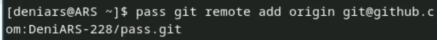

Менеджер паролей pass — программа, созданная в рамках идеологии Unix. Также носит название стандартного менеджера паролей для Unix (Стандартный менеджер паролей Unix).
Установим менеджер паролей pass
Выводим список gpg ключей
И инициализируем хранилище

Синхранизируем с git

Задаем адрес репозитория на хосте

Для синхронизации выполняем

Создаем каталог
И прописываем следующие команды
Для проверки статуса синхронизации используем
Настройка интерфейса с броузером

Создаю тхт файл
Сохраняю пароль


Заменяю пароль

Скачиваю доп. программное обеспечение
Уснановка шрифтов
Создаю свой репозиторий
Подключаю свой репозиторий к системе
Указываю свое email
Извлекаю изменения из репозитория


Автоматическое обновление
Мы научились работать с менеджером паролей pass
:::